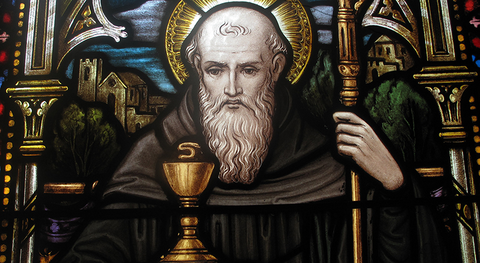

Resultado mais recente
7 de 9
acertos no quiz · 78%
CONHECER É UM CAMINHO
Dados de exemplo
Há sempre um detalhe novo para descobrir. Retome o que aprendeu e siga pelas histórias.
Última tentativa · 28 out. 2026
Resultado mais recente
7 de 9
acertos no quiz · 78%
Quiz concluído
1
uma tentativa completa
Média de acertos
70%
6,3/9 por quiz · 756/1080 respostas
Resultado da sua única tentativa concluída.
São 7 acertos em 9 perguntas. Este resultado registra conhecimento sobre as histórias, não mede sua fé.

Reencontre as viagens e as comunidades de sua missão.
Ler sua históriaConheça o encontro da imagem de Aparecida, em 1717.
Ler sua história